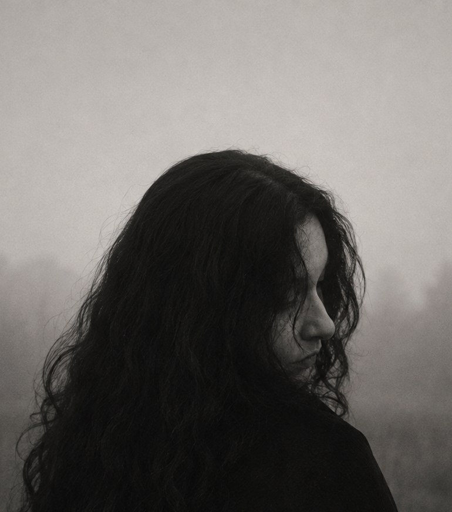

Ich bin eine autodidaktische Künstlerin mit Schwerpunkt auf Kohle- und Mischtechniken. In meinen Arbeiten erforsche ich innere und äußere Landschaften, menschliche Präsenz sowie die Spuren von Erinnerung und Vergänglichkeit.
Meine Arbeiten bewegen sich zwischen Figuration und Abstraktion. Durch Schichtung, Verwischung und Reduktion entstehen Bildräume, die sich zwischen Erinnerung, Wahrnehmung und Realität bewegen.
Meine Arbeiten entstehen durch wiederholtes Auftragen, Verwischen und Abtragen von Kohle und Pigmenten. Dieser Prozess hinterlässt sichtbare Spuren, die Teil der Bildaussage werden. Ich bearbeite bewusst nicht digital nach, sondern lasse die Arbeitsspuren auf dem Bild, um die Authentizität meiner Werke zu wahren.